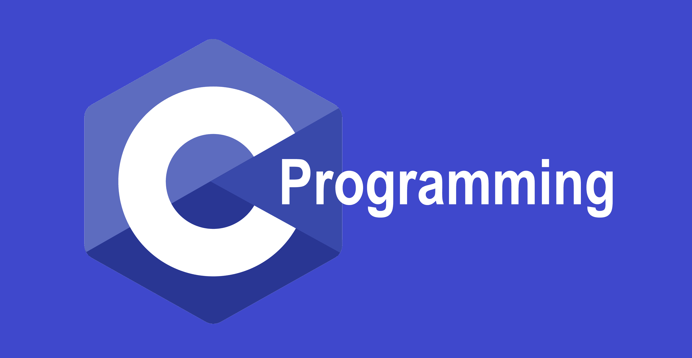

파이썬
배우기 쉽고 확장성이 좋은 언어

Python은 1991년에 발표된 프로그래밍 언어다. 데이터를 수집하고 분석해 시각화할 수 있다. 프로그래밍이 비교적 쉽고 간편하다. 데이터를 분석하고 수집하는데 많이 쓰이는 편이다. 이 언어는 1989년 크리스마스 주에 연구실이 닫혀있어서 심심해서 만든 프로그래밍 언어이다. 이 언어를 만든 사람은 네덜란드의 프로그래머 귀도 반 로섬(Guido van Rossum)이다. 문법이 쉬어 초보자들이 처음 프로그래밍을 할때 추천 되는 프로그래밍 언어다.
C
간단하면서 어려운 언어
C언어는 1972년 벨 연구소에서 데니스 리치가 만든 프로그래밍 언어다. C언어 자체는 기능이 적고 문법이 간단하다. 550쪽 정도밖에 안 되는 C언어 표준에서도 순수 문법 부분은 200쪽 정도밖에 안 되며 나머지는 거의 라이브러리 관련이고 함수의 개수도 적다. 그렇다고 쉽지는 않다. 기능이 적으면 결국 프로그래머가 직접 구현해서 써야한다. 현재는 일반적인 프로그래밍에서보다는 하드웨어 컨트롤과 성능이 중요한 분야에서 주로 쓰인다.
Java
객체 지향 프로그래밍 언어

썬 마이크로시스템즈에서 1995년에 개발한 객체 지향 프로그래밍 언어다. C#과 문법적으로 비슷하다. 가장 큰 특징은 독립적인 언어라는 점이다. 소스 코드를 기계어로 직접 컴파일하여 링크하는 C/C++의 컴파일러와 달리 자바 컴파일러는 바이트코드인 클래스 파일(.class)을 생성하고, 이 파일의 바이트코드를 읽은 뒤 기계어로 바꾸어 실행하는 것은 자바 가상 머신이다. 예를 들어 플랫폼에 종속된 경우 윈도우에서 빌드한 프로그램을 그대로 리눅스나 macOS에서 실행하려 하면 일반적으로 오류가 나지만 Java로 작성 된 프로그램은 플랫폼에 맞는 Java Runtime Environment만 설치되어 있다면 문제 없이 동작한다. 이는 Java 코드 자체가 플랫폼이 아닌 가상머신에 종속적이라는 점, 그리고 프로그램 실행의 주체가 운영 체제가 아닌 Java Runtime Environment이라는 점 때문이며 이러한 점을 통틀어 Java는 플랫폼 종속성이 낮은 언어라고 표현한다.
PHP
대표적인 서버 사이드 스크립트 언어

PHP는 Perl 언어의 영향을 많이 받았는데, 변수 이름 앞에 $를 붙이는 것(예: $var), 펄처럼 배열이 연관 배열로 작동하는 것, 문자열끼리 결합할 때 점(.) 연산자로 결합하는 것이 그 예이다. (예: "Hello, " . "world!" = "Hello, world!"). 다른 프로그래밍 언어에서 하던 대로 더하기 기호(+)로 문자열을 결합하려 하면 엉뚱한 결과가 나온다. PHP에서는 +는 오직 숫자 덧셈만 하기 때문이다. 따라서 두 문자열에 +를 사용하면 두 값이 숫자 0 으로 형변환되어 잘못된 결과가 나온다. (예: "Hello, " + "world!" = 0) PHP의 큰 특징 중 하나는 무상태성(Stateless)으로, HTTP 프로토콜과 마찬가지로 상태를 유지하지 않는 성질이다. PHP 웹 서버에 요청을 하면, 해당 스크립트를 실행한 뒤 완전히 종료하고, 그 다음 새 요청이 들어오면 처음부터 시작하는 방식이다. 이 때문에 PHP에서 싱글톤 패턴을 구현하면, 객체는 한 요청에 의한 작업이 끝날 때까지만 유지된다. 이러한 특성으로 인해 메모리 관리가 쉽고, 사용자(브라우저 요청, cli 입력등)가 잘못된 입력을 해서 오류가 났을 때 개별적으로 처리하게 되므로 안전하지만, 상태를 유지할 수 없기에 기본 배포되는 PHP로는 DB 커넥션 풀을 만들 수가 없다. PHP는 C언어로 CGI를 이용해 웹서버를 만드는것 보다 배우기 쉬웠고, 사용자에게 보여지는 HTML 페이지의 템플릿을 지원해서 쉽게 웹서버를 만들 수 있었으며, 웹 개발에 필요한 관련 함수들이 내장되어 있어서 개발 생산성이 뛰어나서 사용자가 급격하게 늘어났다.
JavaScript
스크립트 언어

Ecma International의 프로토타입 기반의 프로그래밍 언어로, 스크립트 언어에 해당된다. 특수한 목적이 아닌 이상 모든 웹 브라우저에 인터프리터가 내장되어 있다. 오늘날 HTML, CSS와 함께 웹을 구성하는 요소 중 하나다. HTML이 웹 페이지의 기본 구조를 담당하고, CSS가 디자인을 담당한다면 JavaScript는 클라이언트 단에서 웹 페이지가 동작하는 것을 담당한다. 웹 페이지를 자동차에 비유하자면, HTML은 자동차의 뼈대, CSS는 자동차의 외관, JavaScript는 자동차의 동력원인 엔진이라고 볼 수 있다. 첫 탄생은 1995년 넷스케이프에서 근무하던 브랜든 아이크가 10일만에 설계한 것으로부터 시작한다. 처음에는 Mocha라는 이름이었지만 4달 만에 LiveScript라는 이름으로 개명하고 다시 3달 후에는 JavaScript라는 이름이 되어 오늘날까지 이어지고 있다. 'Java와 구문이 유사해서 이름을 JavaScript로 명명했다'는 표면상의 이유를 대지만 그 속은 Java의 유명세를 타서 묻어가려고 의도적으로 그렇게 작명한 것이다. 물론 무단으로 도용한 것은 아니고, 썬 마이크로시스템즈(지금은 오라클에 인수됨)에게 상표권 사용 허락을 받았다. 오라클이 인수하면서 상표권도 오라클로 넘어갔는데, 소송으로 악명높은 오라클이 JavaScript는 딱히 손대지 않고 있다. 애 초에 허락을 맡은 것이기도 하고 JavaScript가 워낙 널리 쓰이다보니 이제는 서로 각자의 유명세에 보탬이 되는 상부상조 관계이기 때문.